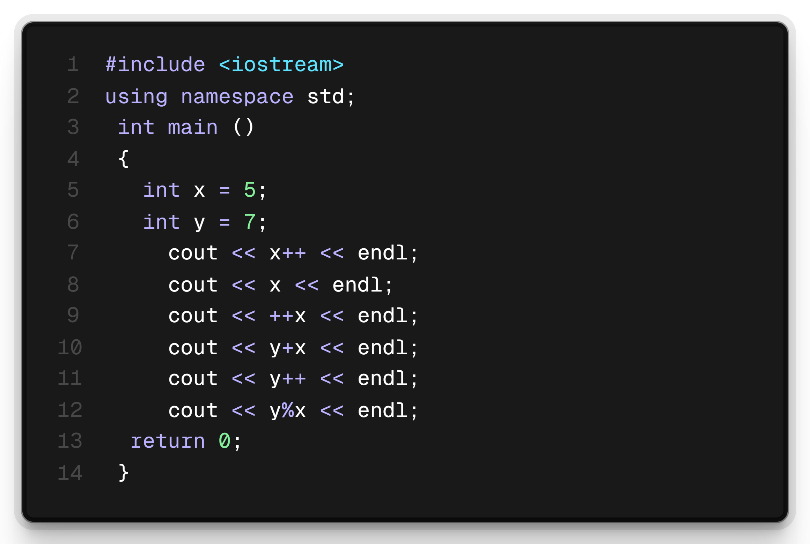
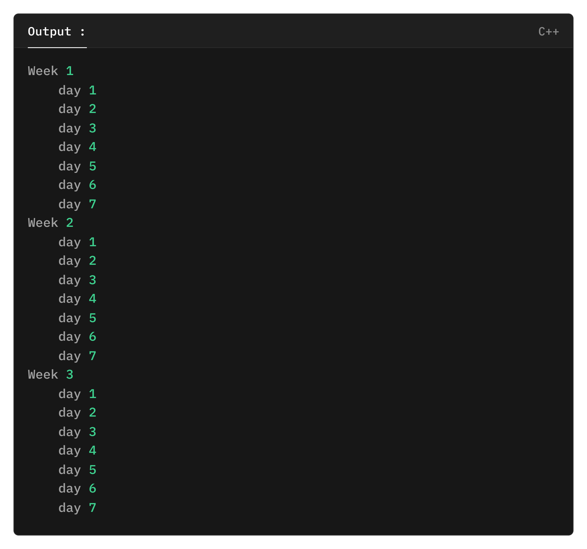
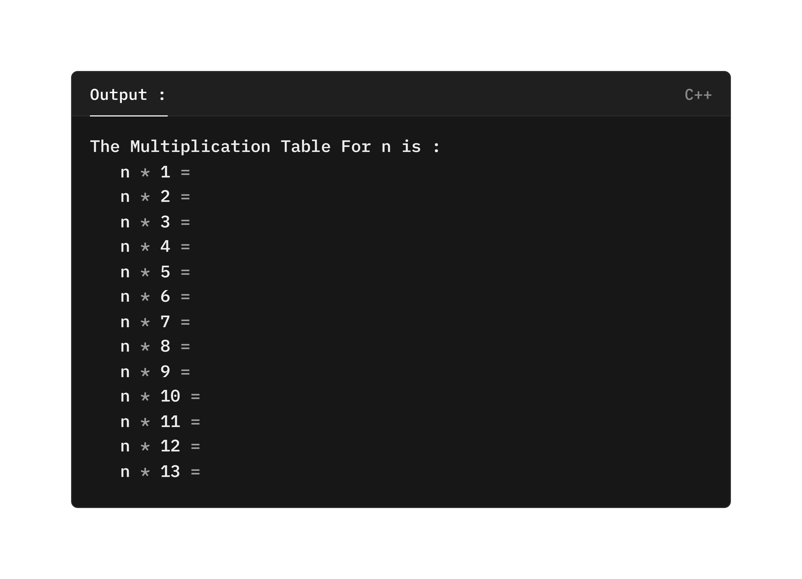

◉ اكتب ال Output لهذا الكود بدون استخدام أي كومبيلر :
◉ قم بإنشاء برنامج يقوم بجمع أول 10 أرقام صحيحة موجبة باستخدام ال loop .
◉ قم بإنشاء برنامج للعبة X O (tic tac toe) .
◉ قم بإنشاء برنامج يطبع هذا الشكل بإستخدام ال loop :
◉ اطلب من المستخدم إدخال عدد , ثم اطبع جدول الضرب لهذا العدد باستخدام for loop :
◀ فكرة البرنامج المطلوب :
تلميح :
▢ ابحث عن طريقة توليد رقم عشوائي .
◉ إقرأ مقال الحلقات من هنا.